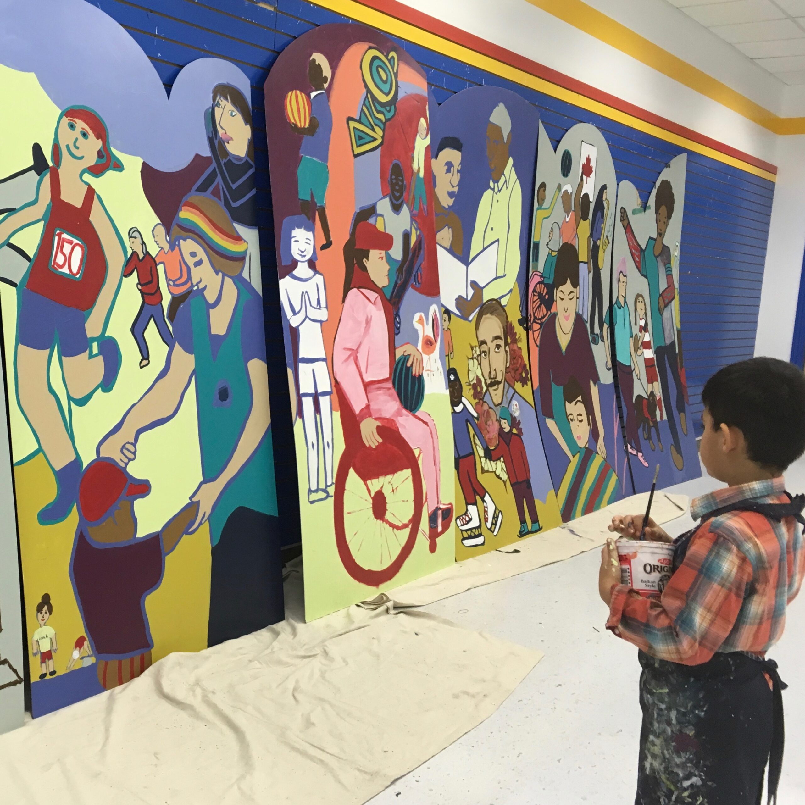
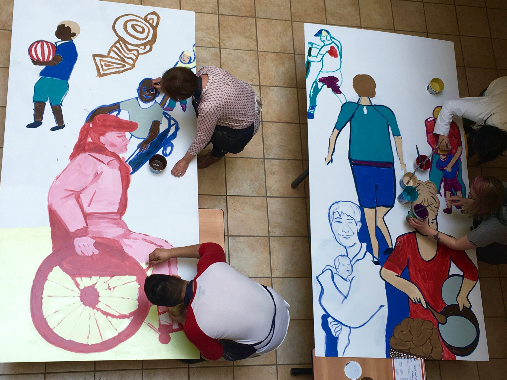
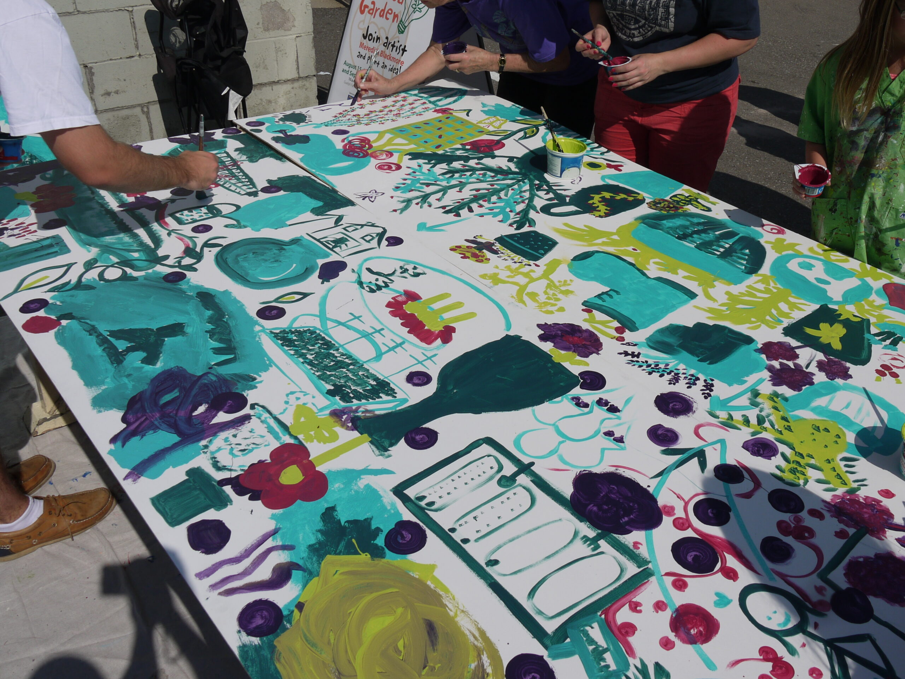
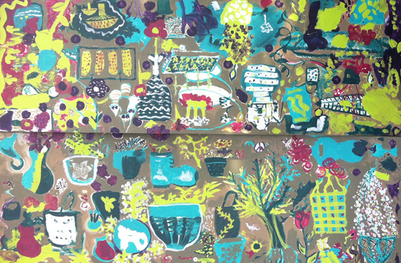
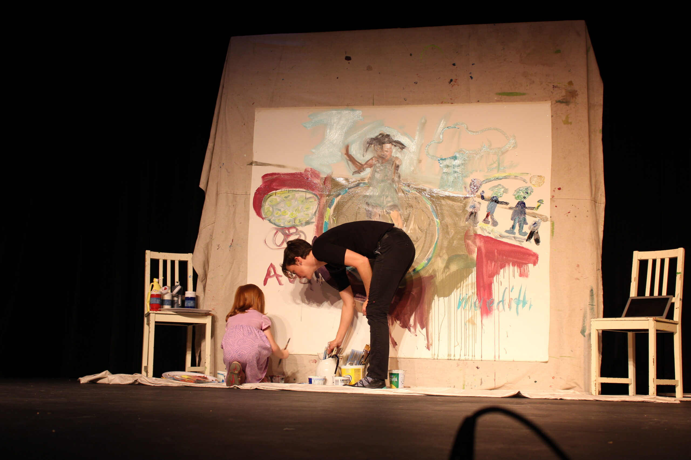
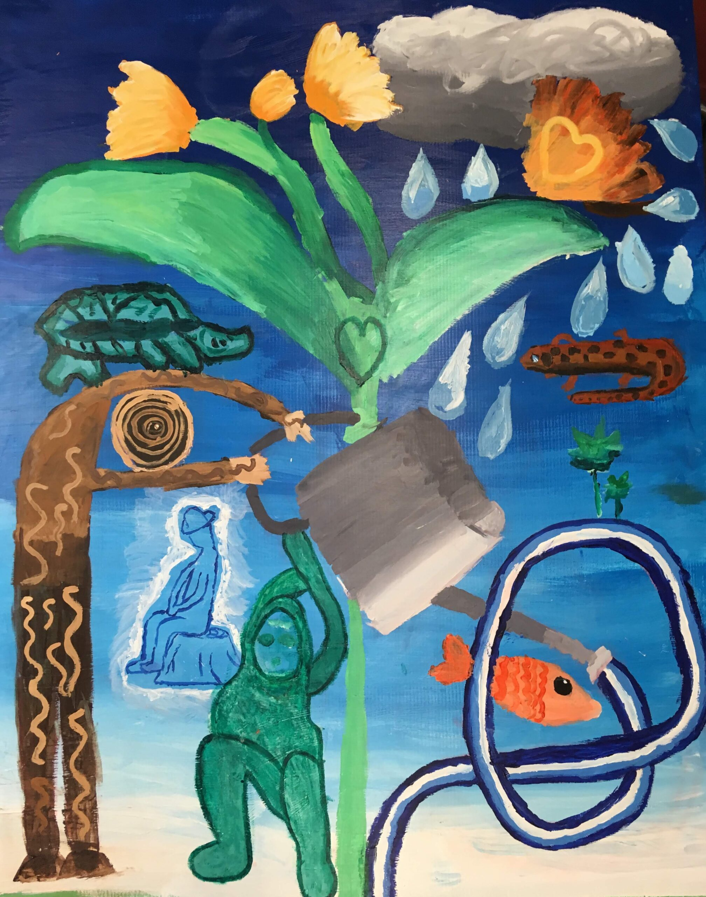
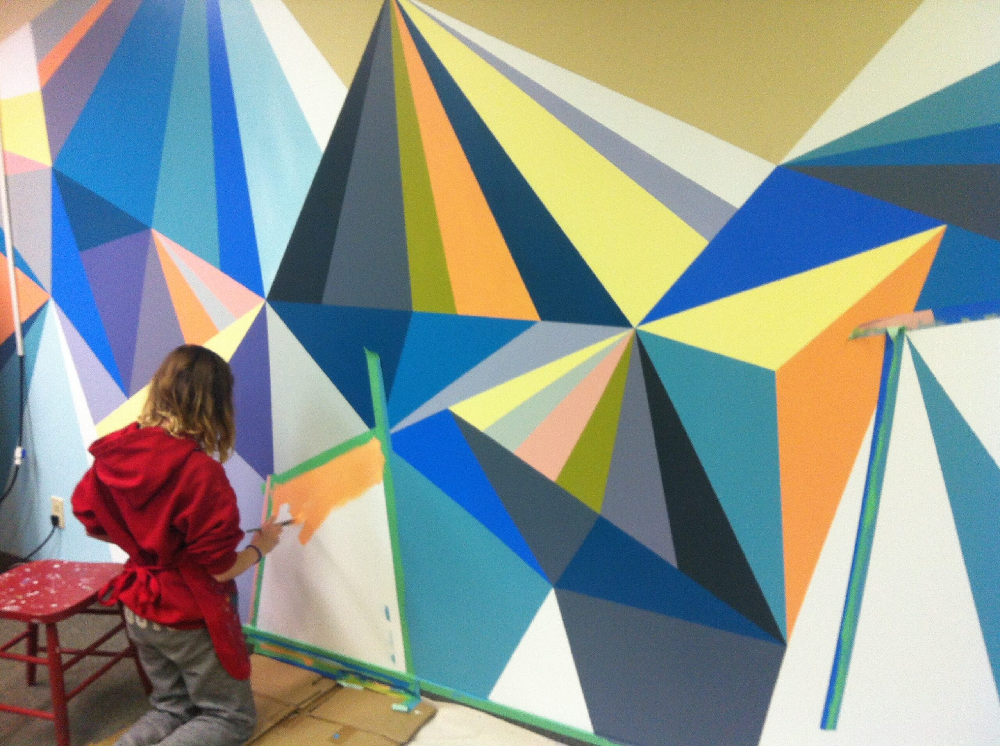
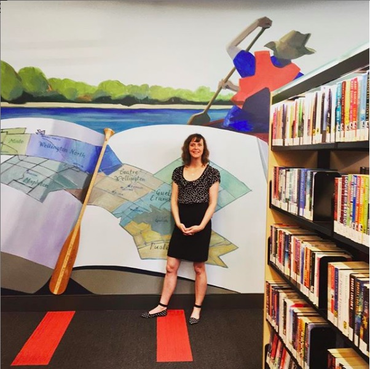
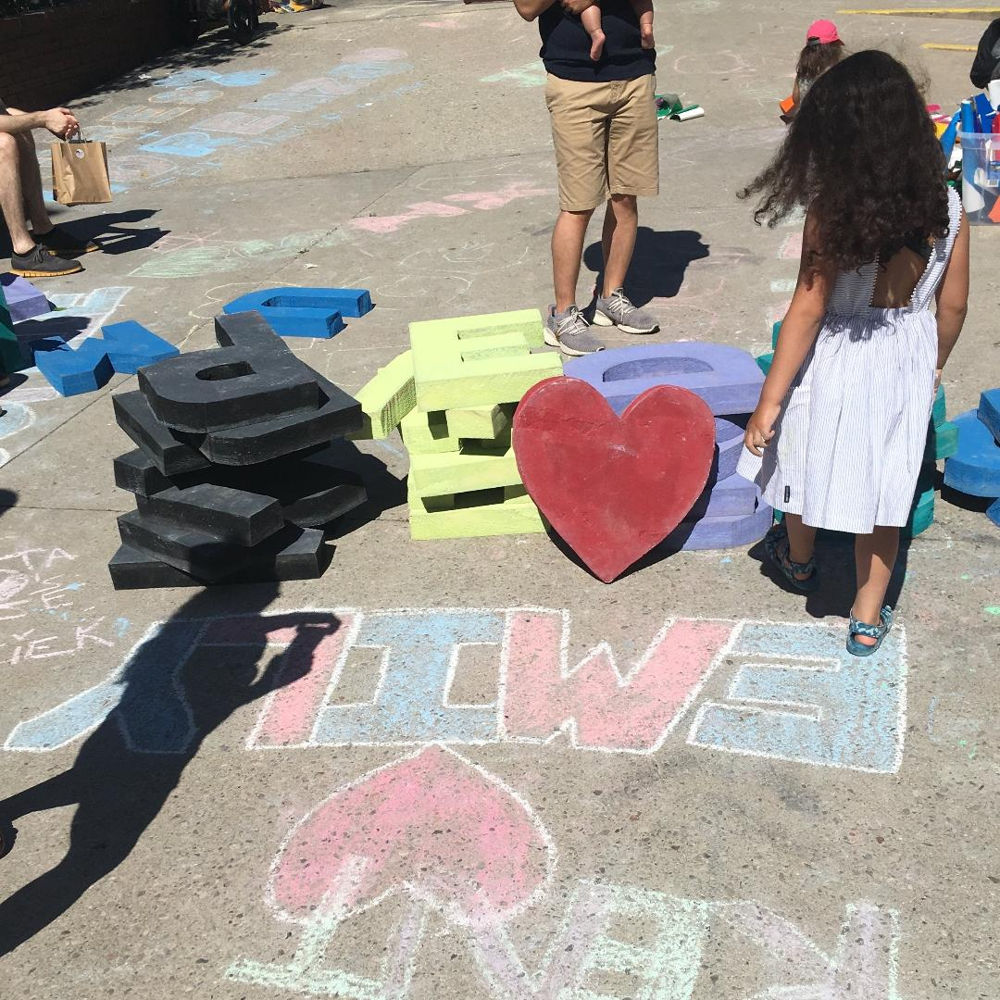
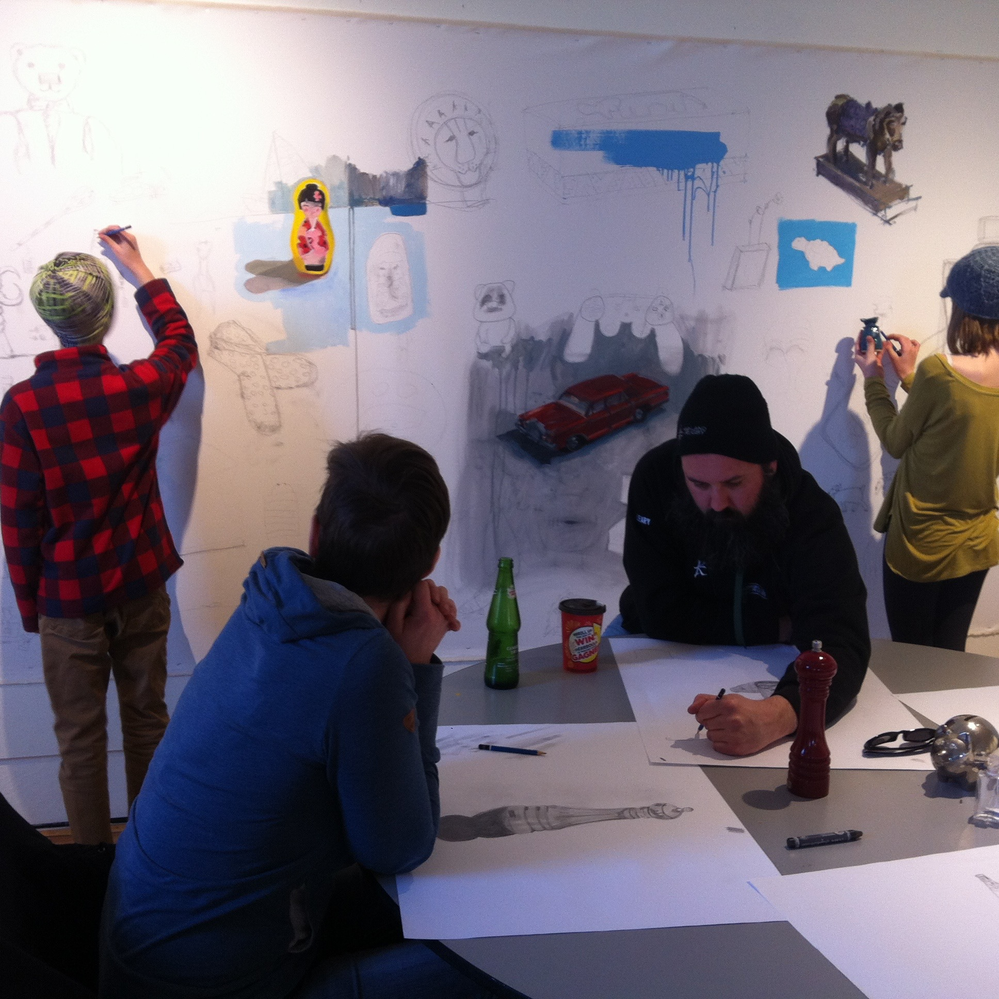

Painting
Murals
Community-scale painting — walls made with neighbourhoods, schools, libraries, and volunteer crews across Wellington County and beyond.

36′ community mural with 150 volunteers — Peoples’ Information Network, 2017

Canada 150 mural — PIN volunteer network

Market Mornings community mural

Market community mural

Performance mural with Ava Todd — Culture Days, Fergus

Environment mural with VIBE Arts — grade 6 students

CMHA — Fergus

Hillsburgh Library

Art on the Street — Guelph

Collaborative paintings — Elora Centre for the Arts
Back to the main page